For a piecewise  curve
curve
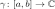
and a continuous on its image,
on its image,
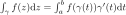
, the right-hand side being the integral of a complex-valued function of a real variable, taken componentwise. The length of is
is
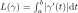
.
The contour integral is linear in , reverses sign with the
orientation, is unchanged by reparametrisation, and satisfies
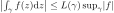
. If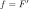
with holomorphic, then
holomorphic, then
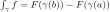
; in particular the integral vanishes on closed curves.Linearity and the behaviour under reparametrisation are those of the real integral, by the substitution rule. The estimate is the triangle inequality for integrals applied to
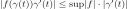
. For a primitive, the chain rule gives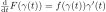
, and the fundamental theorem of calculus applies on each piece.
Let be holomorphic on an open  and let
and let  be a
closed triangle. Then
be a
closed triangle. Then
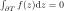
.Let
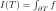
. Bisect by the midpoints of its
sides into four triangles
by the midpoints of its
sides into four triangles 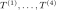
, coherently oriented; the interior edges are traversed twice in opposite directions, so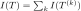
and some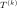
has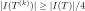
. Iterating gives nested triangles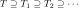
with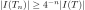
, diameter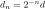
and perimeter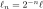
.The intersection of the nested compact sets is non-empty; let
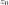
be a point of it. Given , holomorphy at gives
, holomorphy at gives
 with
with
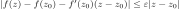
for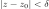
. The affine function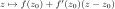
has a primitive, so its integral over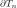
vanishes; hence for large enough
that
large enough
that 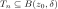
, the standard estimate gives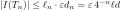
. Combining,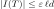
for every, so
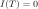
.
Let be holomorphic on a convex open . Then has a
primitive on , and consequently
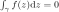
for every closed piecewise curve in .
Fix
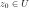
and set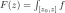
, the integral along the segment, which lies in by convexity. For 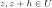
the triangle with vertices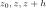
lies in, so Goursat's
theorem gives
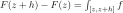
. Hence which tends to as
as 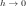
by continuity of. So
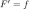
, and the vanishing on closed curves is the previous proposition.
Convexity is doing no essential work – star-shaped is enough, and the
correct hypothesis is again simple connectivity. What matters is that
Goursat assumes only differentiability, not continuity of the
derivative: had the proof needed  continuous, the theorem could
not be used to prove that is continuous, which is exactly what
the integral formula does next.
continuous, the theorem could
not be used to prove that is continuous, which is exactly what
the integral formula does next.